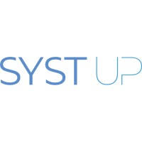

21 juin – 21 août 2026 · 2 mois
Stage Support IT
Systup (PME), Boulogne-Billancourt
- Support informatique auprès des clients de l'entreprise (infogérance)
- Suivi et résolution des demandes et incidents des utilisateurs
- Maintenance des postes de travail, du réseau et des outils du quotidien
- Rédaction de documentation et de procédures pour les clients